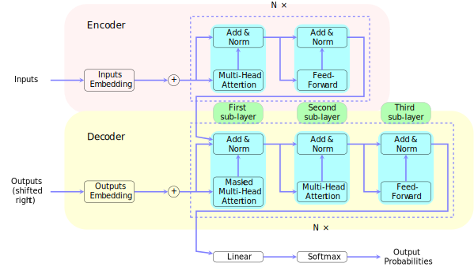

ChatGPT, Myths and Realities
Everything you wanted to know about Deep Learning but were afraid to ask
2024-10-24
Generalities on Machine Learning and Artificial Intelligence
Historical perspective timeline
- 1950s: perceptron (Rosenblatt 1958)
- 1960s: perceptron convergence theorem (Minsky and Papert 1969)
- 1970s-1980s: backpropagation (Rumelhart, Hinton, and Williams 1986)
- 1990s: SVM (Cortes and Vapnik 1995)
- 2000s: Boosting (Freund and Schapire 1997), Random Forests (Breiman 2001)
- 2010s: Deep Learning (Goodfellow, Bengio, and Courville 2016)
AI domains
Artificial Intelligence (AI)
Machine Learning (ML)
Deep Learning (DL)
Large Language Models (LLM)
Train a neural network
Training a supervised Machine learning model
- Class of prediction functions f_\theta: linear, quadratic, trees
- Loss \mathcal{L}: L^2 norm, CrossEntropy, purity score
- Optimizer: SGD, Adam, …
- learning rate \eta: \theta_{k+1} \gets \theta_k - \eta \nabla_\theta \mathcal{L}
- other hyperparameters
- Dataset:
- training: \{(x_i, y_i)\}_{i} to compute loss between prediction f_{\theta}(x_i) and label y_i to update \theta
- test: only compute performance scores (no more updates !)
A quick survey of Deep Learning
Foreword, beware the Alchemy
More or less theoretical guarantees
- field of research
- type of network
- from theory to applications: a gap
Myriad of ad-hoc choices, engeenering tricks and empirical observations
Current choices are critical for success: what are their pros and cons?
Try \rightarrow Fail \rightarrow Try again is the current pipeline
Science and/or Alchemy?
- Criticable current state of Deep Learning research,
- lack of scientific rigor in the field.
- arguing that mathematical rigor is not critical in Deep Learning research
- the field is doing just fine without it.
Criticizing an entire community (and an incredibly successful one at that) for practicing “alchemy”, simply because our current theoretical tools haven’t caught up with our practice is dangerous. Why dangerous? It’s exactly this kind of attitude that lead the ML community to abandon neural nets for over 10 years, despite ample empirical evidence that they worked very well in many situations. (Yann LeCun, 2017, My take on Ali Rahimi’s “Test of Time” award talk at NIPS.)
The main ingredients
- Tensor algebra (linear algebra)
- Automatic differentiation
- (Stochastic) Gradient descent
- Optimizers
- Non-linearities
- Large datasets
Also, on hardware side:
- GPU
- Distributed computing
shape=(batch, height, width, features)
Tensor algebra
- Linear algebra operations on tensors
- MultiLayerPerceptron = sequence of linear operations and non-linear activations
\Rightarrow input can be anything: images, videos, text, sound, …
Automatic differentiation
- chain rule to compute gradient with respect to \theta
- key tool: backpropagation
- don’t need to store the computation graph entirely
- gradient is fast to compute (a single pass)
- but memory intensive
f(x)=\nabla\frac{x_{1}x_{2} sin(x_3) +e^{x_{1}x_{2}}}{x_3}
\begin{darray}{rcl} x_4 & = & x_{1}x_{2}, \\ x_5 & = & sin(x_3), \\ x_6 & = & e^{x_4}, \\ x_7 & = & x_{4}x_{5}, \\ x_8 & = & x_{6}+x_7, \\ x_9 & = & x_{8}/x_3. \end{darray}
Gradient descent
Example with a non-convex function
f(x_1, x_2) = (x_1^2 + x_2 - 11)^2 + (x_1 + x_2^2 - 7)^2
f = ([x1, x2]) => (x1**2 + x2 - 11)**2 + (x1 + x2**2 - 7)**2;
{
const linspace = d3.scaleLinear().domain([0, 49]).range([minX, maxX]);
const X1 = Array.from({length: 50}, (_, i) => linspace(i));
const X2 = Array.from({length: 50}, (_, i) => linspace(i));
// Define your function f here
const f = ([x1, x2]) => (x1**2 + x2 - 11)**2 + (x1 + x2**2 - 7)**2;
const Z = X1.map((x1,i) => X2.map((x2,j) => f([x1,x2])));
const data = [{
x: X1.flat(),
y: X2.flat(),
z: Z,
type: 'surface'
}];
const layout = {
title: '',
autosize: false,
width: 500,
height: 500,
paper_bgcolor: "rgba(0,0,0,0)",
plot_bgcolor: "rgba(0,0,0,0)",
template: 'plotly_dark',
margin: {
l: 65,
r: 50,
b: 65,
t: 90,
}
};
const div = document.createElement('div');
Plotly.newPlot(div, data, layout,{displayModeBar: false});
return div;
}function grad_descent(x1,x2,step,max_iter) {
let grad = f_grad(x1, x2);
let iterations = [[x1, x2]];
function f_grad(x1, x2) {
let df_x1 = 2 * (-7 + x1 + x2**2 + 2 * x1 * (-11 + x1**2 + x2));
let df_x2 = 2 * (-11 + x1**2 + x2 + 2 * x2 * (-7 + x1 + x2**2));
return [df_x1, df_x2];
}
var count = 0;
while (count < max_iter) {
x1 -= step * grad[0];
x2 -= step * grad[1];
grad = f_grad(x1, x2);
if (isFinite(x1) && isFinite(x2) &&
(minX < x1) && (x1 < maxX) &&
(minX < x2) && (x2 < maxX))
iterations.push([x1, x2]);
else iterations.push(iterations[count])
count += 1
}
return iterations;
}
viewof descent_params = Inputs.form({
x1: Inputs.range([minX, maxX], {step: 0.1, value: 0, label: 'x1'}),
x2: Inputs.range([minX, maxX], {step: 0.1, value: 0, label: 'x2'}),
step: Inputs.range([0.001, 0.04], {step: 0.001, value: 0.01, label: 'step_size'})
})
{
var iterations = grad_descent(descent_params.x1,descent_params.x2,descent_params.step,20)
return Plot.plot({
aspectRatio: 1,
x: {tickSpacing: 50, label: "x1 →"},
y: {tickSpacing: 50, label: "x2 →"},
width: 400,
style: {
backgroundColor: 'rgba(0,0,0,0)'
},
marks: [
Plot.contour({
fill: (x1, x2) => Math.sqrt((x1**2 + x2 - 11)**2 + (x1 + x2**2 - 7)**2),
x1: minX,
y1: minX,
x2: maxX,
y2: maxX,
showlegend: false,
colorscale: 'RdBu',
ncontours: 30
}),
Plot.line(iterations,{marker: true})
]
})
}Sensitivity to initial point and step size
(Stochastic) Gradient descent
- not use all the data at once to compute the gradient
- not feasible in practice (memory wise)
- Use mini-batch of data (boostrap samples)
- one more hyperparameter…
\theta_{k+1} \leftarrow \theta_k - \frac{\eta}{n}\sum_{i\in\text{batch}}\nabla_\theta \mathcal{L}(f_\theta(x_i), y_i)
\Rightarrow No general guarantees of convergence in DL setting
Optimizers
SGD, Adam, RMSProp
- Non-convex optimization research on the subject is still very active, and there is no clear consensus on what is the best optimizer to use in a given situation.
- No guarantee of global minimum, only local minimum
- No guarantee of convergence, only convergence in probability
(More than) a pinch of non-linearities
- Linear Transformations + Non-linear activation functions
- radically enhance the expressive power of the model
- ability to explore the space of functions in gradient descent.

Train a Large Language Model (LLM)
From text to numbers
- Main problem: we can’t multiply or do convolutions with words
- Second problem: many words (for a single language)
- Third problem: how to capture semantics?
Embeddings
- Distance between words should not be character based
women
woman
window
widow
Embeddings
- Distance between words should not be caracter based
widow
women
woman
window
BERT: Bidirectional Encoder Representations from Transformers
- embeddings: represent words as vectors in high dimensions
An example
- “We need to book a flight, and we need a book to pass time, also book an hotel!”
[CLS] 101
we 2,057
need 2,342
to 2,000
book 2,338
a 1,037
flight 3,462
, 1,010
and 1,998
we 2,057
need 2,342
a 1,037
book 2,338
to 2,000
pass 3,413
time 2,051
, 1,010
also 2,036
book 2,338
an 2,019
hotel 3,309
! 999
[SEP] 102
First 5 vector values for each instance of "project".
book a flight: tensor([ 2.7359, -6.4879, 0.6554, 0.4170, 6.0187])
need a book: tensor([ 3.3611, 1.1988, 3.2118, -0.8919, 5.3709])
book an hotel: tensor([ 3.2382, -0.8284, 1.4804, -0.7448, 5.4106])
Vector similarity for *similar* meanings: 0.82
Vector similarity for *different* meanings: 0.59Training ChatGPT
Attention networks in ChatGPT
- DL layers = capture different levels of dependencies in the data
- multi-head attention mechansim applies “multi-scale learning” to data sequences \Rightarrow e.g. not only words in sentences, but sentences in paragraphs, paragraphs in documents and so on.
Previously, recurrent networks limited in sequential dependencies,
\Rightarrow transformers capture dependencies in the “whole” in parallel (much faster)
Transformers
Training using humans
- pretraining (unsupervised learning): fill blanck, attention mechanisms, next word
- fine-tuning (supervised learning): specific dialogues, hyperparameters tuning
- RLHF (reinforcement learning): workers give feedback and possible rewards + exploration
The problem with generating text
Was King Renoit real?Is King Renoit mentioned in the Song of Roland, yes or no?Training dataset
- very large dataset: (570Gb of text data, 499 B of tokens)
{
var data = [{
values: [3, 8, 7, 22, 60],
labels: ["wikipedia", "Books1", "Books2", "Webtext2", "Common Crawl"],
textinfo: "label+percent",
type: "pie",
marker: {
colors: ["lightcyan", "cyan", "royalblue", "darkblue", "gold"]
}
}];
var layout = {
template: 'plotly_dark',
paper_bgcolor: "rgba(0,0,0,0)",
plot_bgcolor: "rgba(0,0,0,0)",
font: {
size: 26,
color: "white"
},
margin: {"t": 0, "b": 0, "l": 0, "r": 0},
showlegend: false
};
const div = document.createElement('div');
Plotly.newPlot(div, data, layout,{displayModeBar: false});
return div;
}Repartition of the training dataset
Underrepresentation on the web means less accuracy and more hallucinations!
- Other data (chosen quality)
- Weighted sampling: Wikipedia=5CommonCrawl, Books1=20ComonCrawl,…
Copyright issues, be careful no way to check truthfulness
Political and Ecological impacts of Deep Learning/LLMs
Ecological impact
- 2019: BERT \rightarrowround-trip transcontinental flight for one person
- ChatGPT (GPT-3 model):
- electricity used to train: 1,287 MWh and 552 tCO2
- ~3 private jet flights SF-NY or ~91 french for a year
- daily carbon footprint ~23.04kgCO2 \rightarrow~8.4 tCO2 in a year
- assuming it runs on 16 A100 GPUs \rightarrowvery low estimation
- more than the average french for a year
- refreshing data centers for training $$700K liters of freshwater=produce 320 Tesla cars
- a conversation of 20–50 questions = 500mL bottle of freshwater
- electricity used to train: 1,287 MWh and 552 tCO2
Training ChatGPT: locations is impactful
- leftmost: from Canada / Switzerland to India and West South Africa (x50 factor)
Human considerations
- OpenAI outsources check text to Sama (SF company)
- Sama employs Kenyan workers (underpaid, toxic content, alienating work)
- Denied sessions with wellness counselors
- lawsuits in progress with Meta in Nairobi
“Outsourcing trauma to the developing world”
- workers are approached in Kibera, the largest informal settlement in Africa
- salaries too low to improve their situation, only keep it
Other concerns
- biased content and inaccuracies are flooding the internet: no truth only plausible
- privacy concerns
- plagiarism
- copyright infringements: users are responsible in case of litigation not OpenAI
Impactful tool, with limitations and ethical challenges
Concerns on the scientific side
lack of theoretical understanding, trial and error only
\Rightarrow engineering ad-hoc solutions, giant panels of knobs to turn
race to performance impacting reviews quality and content
- stressful for engineers and researchers,
- new jobs appear and disappear with trends
\Rightarrow replacing domain specialists and researchers
Thank you!
References
Breiman, Leo. 2001. “Random Forests.” Machine Learning 45: 5–32.
Cortes, Corinna, and Vladimir Vapnik. 1995. “Support-Vector Networks.” Machine Learning 20: 273–97.
Freund, Yoav, and Robert E Schapire. 1997. “A Decision-Theoretic Generalization of on-Line Learning and an Application to Boosting.” Journal of Computer and System Sciences 55 (1): 119–39.
Goodfellow, Ian, Yoshua Bengio, and Aaron Courville. 2016. Deep Learning. MIT press.
Jumper, John, Richard Evans, Alexander Pritzel, Tim Green, Michael Figurnov, Olaf Ronneberger, Kathryn Tunyasuvunakool, et al. 2021. “Highly Accurate Protein Structure Prediction with AlphaFold.” Nature 596 (7873): 583–89.
Minsky, Marvin, and Seymour Papert. 1969. “An Introduction to Computational Geometry.” Cambridge Tiass., HIT 479 (480): 104.
Rosenblatt, Frank. 1958. “The Perceptron: A Probabilistic Model for Information Storage and Organization in the Brain.” Psychological Review 65 (6): 386.
Rumelhart, David E, Geoffrey E Hinton, and Ronald J Williams. 1986. “Learning Representations by Back-Propagating Errors.” Nature 323 (6088): 533–36.
Appendix
Large datasets
- In machine learning, “overfitting” in the training phase is a concern with a function space too large compared to the size of the training dataset.
- But with DL, and for the moment this phenomena is not well understood, it seems that the larger the dataset, the better the generalization of the model, even if we increase the number of parameters of the model (broaden the function space).
\Rightarrow in short, as long the scaling is enough, there is a sensitive decoupling between the size of the dataset and the size of the model, and the risk of overfitting is mitigated (which is a big overcome of DL over classical ML in those datasets).
Quick bestiary
The Bestiary I, Dense Neural Networks
Very successful in tabular data (structured data), but also some standardised data (like MNIST). Used almost in every DL model as the last layers before output.
- Dense Neural Networks (DNN): f_\theta(x) = \sigma(W_1 x + b_1) \circ \sigma(W_2 x + b_2) \circ \dots \circ \sigma(W_n x + b_n)
- \sigma: activation function (ReLU, tanh, sigmoid, …)
- W_i: weight matrix
- b_i: bias vector
- \theta = (W_1, b_1, \dots, W_n, b_n): parameters to learn
The Bestiary II, Convolutional Neural Networks
Immensely successful in computer vision.
- Convolutional Neural Networks (CNN): f_\theta(x) = \sigma(W_1 \star x + b_1) \circ \sigma(W_2 \star x + b_2) \circ \dots \circ \sigma(W_n \star x + b_n)
- \star: convolution operator
- W_i: weight matrix
- b_i: bias vector
- \theta = (W_1, b_1, \dots, W_n, b_n): parameters to learn
The Bestiary IV, Recurrent Neural Networks
For sequences (first DL models for NLP and speech recognition).

The Bestiary V, Graph Neural Networks
Encodes graph structure (nodes, edges, global) into embedding vectors
Use those vectors as input to a network.
Attention mechanism \Rightarrow breakthrough of protein folding prediction with AlphaFold of DeepMind.
Jumper et al. (2021)
The Bestiary VI, Generative Adversarial Networks
GAN
[generative adversarial network for celebrity faces] (https://towardsdatascience.com/generative-adversarial-network-gan-for-dummies-a-step-by-step-tutorial-fdefff170391)
A quick history leading to ChatGPT
- Grossing number of parameters and architectures
- …
Tokens vs embeddings
- (token: atomic unit) \neq (embedding: vector representation)
Tokenize the word: tokenizer
['token', '##izer']pipeline to train a representation model (like BERT):
tokenize text \rightarrowmap token to a unique id \rightarrow map id to randomized initial vector \rightarrowtrain
BERT training set=books + wikipedia: Word completion + next sentence prediction
ChatGPT, Myths and RealitiesSéminaire de Culture Générale